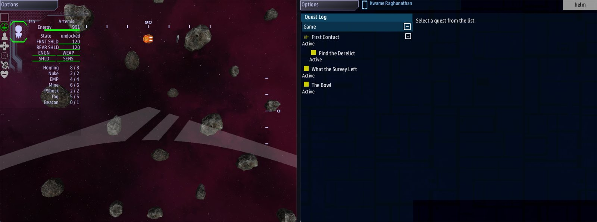

Class 4, Lecture 5 - What is inside¶
What you will have at the end¶
The Hollow has things in it.
Three sample canisters lie against the wall of the big room. A stone bowl sits in the niche at the back of the built room. A ship that flies up to either one takes it aboard.
Two quests wait for them. One is finished when the canisters are aboard. The other is finished when the bowl leaves its place, and you never write the line that says so. The game says it for you.

The Cache's canisters from the ship, and the quest list: What the Survey Left and The Bowl.You will add to mission.amd. You will not touch story.mast.
Today the ship does the taking. In Lecture 8 a member of the crew will go in and take the bowl by hand, and nothing you write today will change.
The video¶
About 6 minutes. Subtitles are available in the player.
Before you start¶
MyRuinas Lecture 4 left it: The Hollow with its four rooms, the ring, three places, Surveyor Rook and his recording at the altar.mission.amdis 199 lines long.sbs lint MyRuinsaysclean.- You have done Class 1, Lecture 8 (a quest with
Done when:). - VS Code with the mission folder open, a command prompt open in
C:\Cosmos\data\missions, and the game closed.
If you have already done Lectures 6 and 7, do this lecture on the file you have. The steps are the same. Every step says where to type by naming a line that is in your file either way.
This page and its example\ start from Lecture 4's file.
The line that starts the game is the one from Lecture 4:
Step 1 - A thing, a place, and a word¶
Three records make a thing you can take.
| You write | Where | What it is |
|---|---|---|
| An item | A section of its own, called Items | What the thing is: its name, what it looks like |
Item: on a place |
The place's fence, in Relics | Where one of them lies |
| A quest | The Quests section | What the story does when it is taken |
The item is written once. Any number of places can hold one.
There are two ways a quest can wait for a thing.
| The quest says | It is finished when | Use it for |
|---|---|---|
Done when: collect canister |
A ship takes aboard a thing whose key is canister |
Ordinary things: samples, salvage, supplies |
Done when: signal hollow_taken |
The one thing this ruin was hiding is taken | The piece the whole story is about |
The second one is new, and it is the reason for this lecture. A ruin can have one place
that holds the piece. When the piece is taken, the game sends a word made from the
ruin's own key: hollow, then _taken. You wrote that word yourself in Lecture 7, if you
have done it, and had Comms say it. From today the game says it.
Step 2 - The Items section, and a canister¶
Open mission.amd. Find this line. It is the comment above your Characters section:
Above that line, type this, and leave two blank lines between it and the comment:
// ---- Items. The things a crew can find and carry away.
## [Items](items)
### [Survey Canister](canister)
---
Type: item/quest
Art: container_small_1a
---
A sealed sample tube from the first survey. The label has faded.
Two hashes for the section. Three for the item, like every record in this file.
| Line | What it means |
|---|---|
[Survey Canister] |
The name the crew is told when they take it |
(canister) |
The key. A place asks for the item by this word, and so does a quest |
Type: item/quest |
A thing the story carries. Write this on every item in this class |
Art: container_small_1a |
What it looks like. It also decides whether a ship can take it |
| The line under the fence | What the thing is, in a sentence |
The Art: line matters more than it looks. A ship takes a thing by flying into it,
and only some shapes can be flown into. These can:
| Family | Keys |
|---|---|
| Containers | container_1a to container_5c, and container_small_1a to container_small_4c |
| Strange objects | alien_1a to alien_5c, and alien_small_1a to alien_small_5c |
Each family runs 1 to 5 (or 1 to 4), and a, b, c. Pick any. Leave the line out, or
misspell the key, and the thing is drawn and can never be taken. Lint does not check this
line, so check it yourself.
Run lint. You want clean.
Step 3 - A place that holds it¶
Find The Niche, in the Relics section. Leave one blank line below its description, and type:
### [The Cache](cache)
---
Relic: hollow
Point: 3600, 0, 500
Roles: cache
Item: canister
Qty: 3
---
A stack of sample tubes against the wall of the Nave. The first survey left them.
A place, as in Lecture 3, with two new lines.
| Line | What it means |
|---|---|
Item: canister |
One of these lies here. The word is the item's key |
Qty: 3 |
It is worth three. The crew takes all three in one go |
3600, 0, 500 is inside The Nave, off to one side. A ship crossing the room does not
brush it by accident.
The thing is there from the start of the game. You will see how to make one appear later in the exercise.
Step 4 - A quest that waits for it¶
Find this line. It is the comment above your Scans section:
Above it is the last record of your Quests section. Below that record's description, leave one blank line and type:
### [What the Survey Left](left)
---
Scope: shared
Starts when: at once
Objective: Pick up the survey canisters in The Nave
Done when: collect canister
Reward: 60 credits
---
The first survey left its samples behind. Bring them out.
A stack of sealed tubes stands against the wall of The Nave, where the first survey set them down forty years ago. Nobody at DS 1 knows what is in them.
Done when: collect canister is the new line. The word after collect is the item's key.
The description is two paragraphs, with a blank line between them. A quest's description is a page in the quest list, as in Class 1, Lecture 8: the first paragraph says what to do, the second what is known. An item's description is different: no screen in this class shows it, so one sentence is plenty there.
It counts pick-ups, and not what a pick-up is worth. The Cache is one thing to take,
worth three. So the line is collect canister, and one visit finishes it. If you write
collect 3 canister, the game waits for three separate pick-ups. With one cache, that
quest never finishes, and lint cannot tell you.
Step 5 - The piece¶
Now the thing the ruin was hiding. First the item. In the Items section, leave one blank line below the canister's description, and type:
### [The Stone Bowl](stone_bowl)
---
Type: item/quest
Art: alien_small_2a
---
A shallow bowl of gray stone. It fits the hollow worn into the top of the altar.
Then find The Niche again, and change its fence. Add a word to Roles:, and add one
line at the end:
### [The Niche](niche)
---
Relic: hollow
Point: 3000, 0, -2500
Roles: niche, relic_piece
Hidden: yes
Item: stone_bowl
---
A recess at the back of the Gallery. Easy to miss.
| Line | What it means |
|---|---|
Roles: niche, relic_piece |
Two roles, with a comma between. niche is yours. relic_piece is the game's: the thing in this place is THE piece |
Item: stone_bowl |
The bowl lies here |
relic_piece is the second role in this class that the game reads for itself. The first
was entrance, in Lecture 3.
It takes both lines. The role with no Item: is a place with nothing in it. The Item:
with no role is an ordinary thing, and no word is sent.
Step 6 - The word the game sends¶
Below What the Survey Left, leave one blank line and type:
### [The Bowl](bowl)
---
Scope: shared
Starts when: at once
Objective: Take the stone bowl out of the niche
Done when: signal hollow_taken
Reward: 200 credits
---
Something small and heavy sits in the niche at the back of The Gallery.
It is the one thing in The Hollow worth the trip. Whatever else the crew finds in there, this is what DS 1 sent them for.
Look at Done when: signal hollow_taken. Nothing in your file sends that word, and lint
still says clean. Lint knows the game sends it.
How the word is made:
| Part | Where it comes from |
|---|---|
hollow |
The key of the ruin: ### [The Hollow](hollow) |
_taken |
The game adds it |
It is the ruin's key. It is not the key of the place (niche_taken), and not the key of
the thing (stone_bowl_taken). Lint names both of those mistakes.
When the word is sent:
| What happens to the piece | The word is sent |
|---|---|
| A ship flies into it and takes it | At once |
| It is carried out of the ruin, clear of every room | As it leaves |
| A crew member in a suit takes it (Lecture 8) | At once |
It is sent once in a game. Start the quest that waits for it before anybody can reach
the piece. That is why The Bowl says Starts when: at once. A quest that starts after
the bowl is aboard has missed the word, and it never finishes.
Your finished pieces¶
At the end of the Quests section:
### [What the Survey Left](left)
---
Scope: shared
Starts when: at once
Objective: Pick up the survey canisters in The Nave
Done when: collect canister
Reward: 60 credits
---
The first survey left its samples behind. Bring them out.
A stack of sealed tubes stands against the wall of The Nave, where the first survey set them down forty years ago. Nobody at DS 1 knows what is in them.
### [The Bowl](bowl)
---
Scope: shared
Starts when: at once
Objective: Take the stone bowl out of the niche
Done when: signal hollow_taken
Reward: 200 credits
---
Something small and heavy sits in the niche at the back of The Gallery.
It is the one thing in The Hollow worth the trip. Whatever else the crew finds in there, this is what DS 1 sent them for.
In the Relics section, The Niche changed and The Cache below it:
### [The Niche](niche)
---
Relic: hollow
Point: 3000, 0, -2500
Roles: niche, relic_piece
Hidden: yes
Item: stone_bowl
---
A recess at the back of the Gallery. Easy to miss.
### [The Cache](cache)
---
Relic: hollow
Point: 3600, 0, 500
Roles: cache
Item: canister
Qty: 3
---
A stack of sample tubes against the wall of the Nave. The first survey left them.
And the new section, above the Characters comment:
// ---- Items. The things a crew can find and carry away.
## [Items](items)
### [Survey Canister](canister)
---
Type: item/quest
Art: container_small_1a
---
A sealed sample tube from the first survey. The label has faded.
### [The Stone Bowl](stone_bowl)
---
Type: item/quest
Art: alien_small_2a
---
A shallow bowl of gray stone. It fits the hollow worn into the top of the altar.
The whole file is in example\mission.amd. It is 251 lines long.
Step 7 - Check it¶
You want clean under mission.amd.
Lint names every mistake in the first two tables. The word in the last column is at the end of the line lint prints.
The thing and its place:
| Mistake | What the game does | Lint says |
|---|---|---|
Item: canistr (the key misspelled) |
Something is drawn at The Cache, named canistr. A ship cannot take it |
relic-unknown-item |
Item: canister, stone_bowl (two things on one line) |
The same: one thing with that whole line for a name | relic-unknown-item |
| No Items section at all | Something is drawn at each place. A ship sitting on it takes nothing | relic-unknown-item, once for each Item: line |
Qty: 3 with no Item: line |
Nothing is there | relic-qty-without-item |
#### [Survey Canister](canister) (four hashes) |
It works, and a line in mast.runtime.log says the heading has too many hashes |
heading-level-jump |
## Items (no brackets and no key) |
Both things are drawn and neither can be taken. No word is sent. Two lines in mast.runtime.log |
unknown-field, twice |
## [Things](things) (a key of your own) |
The same, with nothing in the log | section-not-loaded |
| The canister's record typed in the Relics section | The canisters are drawn and cannot be taken. A line in mast.runtime.log |
unknown-field |
The Niche moved outside every room: Point: 3000, 0, -3500 |
The bowl counts as carried out of the ruin. The word is sent as the game starts, and The Bowl pays with nobody near it | relic-point-outside |
Starts when: accepted on The Cache |
The canisters never appear | relic-when-unwatchable |
The word:
| Mistake | What the game does | Lint says |
|---|---|---|
Done when: signal hollow_takn |
The bowl is taken, and The Bowl never finishes | unfired-signal |
Done when: signal niche_taken (the place's key) |
The same | unfired-signal |
Done when: signal stone_bowl_taken (the thing's key) |
The same | unfired-signal |
Item: stone_bowl on The Niche and no relic_piece role |
The bowl is an ordinary thing. It is taken, and no word is sent | unfired-signal |
Roles: niche relic_piece (no comma) |
The same | unfired-signal |
Roles: niche, relic_peice |
The same | unfired-signal |
What lint cannot see¶
Lint says clean for everything in this table. Check the first three by eye every time.
| You wrote | What happens | What tells you |
|---|---|---|
No Art: line on an item, or Art: unknown, or a misspelled key such as container_smal_1a |
The thing is drawn, and a ship sitting on it takes nothing | Nothing |
Done when: collect 3 canister, with one cache |
The ship takes the cache. The hold has three. The quest has counted one of three, and never finishes | Nothing |
Roles: niche, relic_piece and no Item: line |
Nothing is in the niche. The Bowl never finishes | Nothing |
Done when: collect canisters (the plural) |
Never finishes. The word has to be the key, letter for letter | Nothing |
Done when: collect cache (the place), or collect Survey Canister (the name) |
Never finishes | Nothing |
Qty: three |
The cache is worth one | The crew is told Pickup: Survey Canister, with no x3 |
Item: canister typed in the fence of The Hollow itself |
Nothing is placed anywhere | Nothing |
Three things that look like mistakes and are not:
Item:on a room, such as The Nave, and not on a place. The thing lies in the middle of the room. A place is better: you choose the spot, and Lecture 8 can send someone to it.- No
Type:line. The thing is taken just the same. Keep the line: it is what keeps a story thing out of the game's lists of upgrades and trade goods. - Two places with
relic_piece, each holding a thing. The first one taken sends the word. The second sends nothing more.
What Science reads¶
Select a canister or the bowl on Science, and the scan tab reads:
That sentence is the game's, and today you cannot change it for a thing. A scan record
with Scan of: canister draws a warning from lint (role-nothing-wears), and in the game
it loses to that sentence.
What you can write is a reading for the PLACE, the way Lecture 7 does: Scan of: cache.
Step 8 - Play it¶
- Open the quest list. What the Survey Left and The Bowl are both there, beside First Contact from the template.
- Fly to The Hollow, in through The Mouth and the ring, into The Nave. The canisters are off to one side of the middle, toward The Vault.
- Fly at them. They are taken when the ship is close. What the Survey Left completes.
- Fly into The Gallery, to the far end. The bowl is in the niche. Fly at it. The Bowl completes.
What the crew is told, word for word:
| When | The crew is told |
|---|---|
| The cache is taken | Pickup: Survey Canister x3 |
| The bowl is taken | Pickup: The Stone Bowl |
| A quest is finished | Quest complete: What the Survey Left |
What the side is paid:
| After | Credits so far |
|---|---|
| What the Survey Left | 60 |
| The Bowl | 260 |
When you stop, open mast.runtime.log in your mission folder. It should be empty.
How this page was checked. The game was played by a script, with no screen. The script put the ship on each thing, and the game's own rules did the rest: the pick-up, the word, the quests and the pay. In that stand-in a ship took the cache from 500 away and not from 700. Nobody has yet flown a ship into these two things on a real bridge. If yours behave differently, the screen is right and this page is wrong.
If something goes wrong¶
| What you see | Likely cause |
|---|---|
Nothing in the mission can be taken, lint is clean, and the log is empty |
Your MyRuin was made before the template learned to pick things up. See the box below |
| One thing is drawn and cannot be taken | Its Art: line is missing or misspelled. Use a key from the table in Step 2 |
No thing can be taken, and lint warns about Type |
The Items heading is not ## [Items](items) |
| A thing is taken and its quest does not finish | For collect: the word is not the item's key, or there is a number bigger than the pick-ups there are. For the bowl: run lint, it names every spelling of the word but the right one |
| The Bowl is finished and paid when the game starts | The Niche's Point: is outside The Gallery. Lint names it |
| Nothing is in the niche | Item: is missing from The Niche. Or the item's key is misspelled there, and lint names it |
| The cache is worth one | Qty: is not a number |
| You did Lecture 7 first. The ship takes the bowl on its way to the niche, The Bowl pays, and Lecture 7's last step still waits for Comms | That is right. The word was sent before that step had started, so the step did not hear it. The answer on Comms sends it again. Lecture 8 puts this in order |
If your folder is older than the template. Open story.json in your mission folder.
Look for a line with items in it. If there is none, find the line that ends
comms.v1.4.0.mastlib", and add this line below it, with the same spaces in front:
Save, and fetch the libraries once more:
A mission made today with sbs create has the line already.
Exercise¶
-
A second cache. Add a second place in The Nave, with a key and a role of its own,
Item: canisterandQty: 3. Change the quest toDone when: collect 2 canister. Play: the quest finishes when the ship has taken both. There are six canisters in the hold, and two pick-ups. -
Nothing there until the ship comes. Add one line to The Cache, under
Qty::
Play. The canisters are not in the room until the ship is within 900 of the place.
The words after Starts when: are the ones a beat uses, and here they decide when a
thing appears.
- Nothing there until somebody says so. Take that line out again. Add this line to
The Niche, under
Item::
Then, in the Dialogue section, change the answer in The Rest of It:
Play. The niche is empty until Comms hears Rook out and marks the Gallery. Then the bowl is there. Lecture 8 uses this to keep the bowl safe until the story reaches it.
-
Break it where lint can see. Change
Roles: niche, relic_piecetoRoles: niche relic_piece. Run lint and read the warning. Put the comma back. -
Break it where lint cannot see. Delete the
Art:line from the canister. Run lint:clean. Play: the ship sits on the canisters and nothing happens. Put the line back.
Checkpoint¶
You are done when all five are true:
sbs lint MyRuinshowsmission.amdasclean.- The quest list shows What the Survey Left and The Bowl from the start.
- Taking the cache finishes What the Survey Left, and the crew is told
Pickup: Survey Canister x3. - Taking the bowl finishes The Bowl, and no line of yours sent the word.
- You can say where
hollowinhollow_takencomes from.
Next¶
Lecture 6: a clue chain, a side story and a cutscene. It starts from Lecture 4's file and uses nothing from today, so your two things simply stay in the ruin while you write it.
Further reading¶
- "Relic interiors" in the library documentation: "What is in it" and "When it appears".
- "Quests" in the library documentation: the table of triggers, for
collect. - "Items & upgrades" and "Custom upgrades" in the library documentation, for what the
other words after
Type:do. They are for things a ship switches on, and things it sells. This class does not use them.
Download this lecture's finished files (a zip of its example folder).